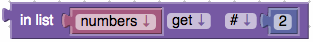
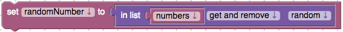
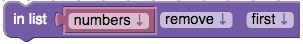

Create Empty List
The create empty list block will simply create an empty list.

The create empty list block will simply create an empty list.

The create list with block allows the user to specify the initial values in a new list. The create list block comes with a default of 3 list values but you are able to add as many values to the list as needed. It is most common to create a list with values of the same type (String, Integer, Colour, etc.) but it is possible to create a list with values of different types as well. The simple example below shows a list called numbers being created with three numbers in the list, ["1", "2", "3"].

The create list with item block allows you to create a list that has the specified number of copies of an item. For example, the following blocks set the variable, named "words", to the list containing ["very", "very", "very"].

The value of the length of block is the number of elements in the list used as an input. For example, the value of the following blocks would be 3 because the list "numbers" has 3 items in it.
The value of an empty block is true if its input is the empty list and false if it is anything else (including a non-list). The value of the example below would be false because the variable numbers is not empty: it has three items.
The find item in a list block, finds the position of an item in a list. With this block you can search a list and find either the first or last occurrence of the item you are searching for. This block requires you to choose between mode first or last. Also you must provide an item to search for in the list. If the item is nowhere to be found in the list the result is 0. For this example assume the list "words" contains the same word "very" three times. This block returns a value of 1 because the first appearance of "very" is in the beginning of the words list.

The get an item from a list block has a lot of different options. We will start with getting a single item from a list then getting and removing. This section finishes with removing an item from a list.
Using this block with get mode there is the option of choosing which item from the list you would like to retrieve. You may provide a number index or a number index from the end of the list (counting backwards). Or you can simply choose the first, last, or a random item from the list. Below is an example that gets the second item from the list "numbers" and returns the item. 
A dropdown menu on the get an item from a list block has the option to change get to get and remove. Get and remove has the same options as getting a single item. You can provide the number index you want to get and remove or a number index from the end of the list. Or you can choose the first, last, or a random item from the list to get and remove. Getting and removing an item will remove the item from the list and return the item. For the example below assume the list numbers contains one, two and three in that order. First, a random item from the list is removed and then returned. Then, the randomly selected item is set to a new variable randomNumber. 
On the first dropdown for this block select "remove". When remove is selected the plug on the left of the block disappears and the block will no longer return anything. You are still able to choose which item should be removed by using the index, index from end, first, last, or random. Look at the example below that removes a random item from a list called numbers. 
The in list...set block replaces the item at a specified location in a list with a different item. This block requires a list to be provided. There are several options to specify which item in the list you would like to replace: an index, index from the end, first, last, or random. In the example below the list "words" is create and filled with "very" three times. Then the in list...set block is used to set the third item in the list as "good". The result is the list words is now holding ["very", "very", "good"].

The in list...insert at block is a different mode than the in list...set block. Choose "insert at" from the drop-down menu instead of the default. It inserts a new item into the list at the specified location, before the item previously at that location. The following example is similar to the previous example but has added functionality (See above for reference). In this example the in list...insert at block is used to insert at index number one the string "You're". The resulting value of words is ["You're", "very", "very", "good"].

The get sublist block is similar to the "get an item from a list block" except that it extracts a sublist, rather than an individual item. Keep in mind this block does not modify the original list. There are several options for how the start of the sublist can be specified: an index, index from the end, or the first item. Similar options for how the end of the sublist can specified: an index, index from the end, or the last item. The example below starts with the creation of the list letters adding "alpha", "beta", and "gamma". Then a new list called "first letters" is created. The get sublist block adds the two elements "alpha" and "beta" to "first letters".

The make list from text block splits the given text into pieces using a delimiter. In this example a dash is used for the delimiter. Each time, in the provided string "311-555-2368" , the delimiter in found a new item for the list is created. This block returns a new list containing three pieces of text: "311", "555", "2368".

The make text from list block joins a list into a single text using a delimiter. In this block you need to provide a list and the delimiter you would like to be used for your end result. The make text from list block will join them with the delimiter you specify and return the resulting string. View the example below.